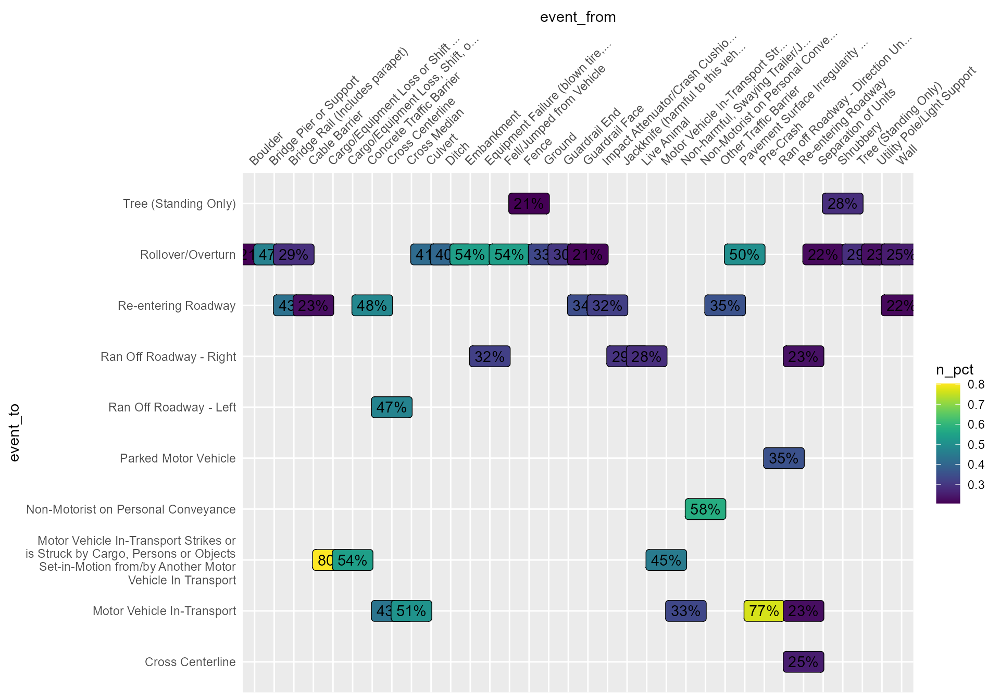

This vignette explores the vsoe (Vehicle Sequence of Events) data to visualize crash sequence patterns.
vsoe is one of three event-based data files, the
others being cevent and vevent.
According to the CRSS
Analytical User’s Manual, vevent “has the same data
elements as the cevent data file” plus “a data element
that records the sequential event number for each vehicle,” and the
vsoe file “has a subset of the data elements contained
in the Vevent data file (it is a simplified
vevent data file)” (p. 16). rfars
therefore omits cevent and vevent.
First we get one year of data, and filter to the southern region for simplicity.
mydata <- rfars::get_gescrss(years=2021, regions = "s")
#>
#> ── Column specification ────────────────────────────────────────────────────────
#> cols(
#> .default = col_character(),
#> year = col_double(),
#> psu = col_double(),
#> psustrat = col_double(),
#> casenum = col_double(),
#> weight = col_double(),
#> id = col_double(),
#> veh_no = col_double(),
#> per_no = col_double(),
#> minute = col_double(),
#> mod_year = col_logical(),
#> model = col_double(),
#> peds = col_double(),
#> permvit = col_double(),
#> pernotmvit = col_double(),
#> psu_var = col_double(),
#> pvh_invl = col_double(),
#> str_veh = col_double(),
#> ve_forms = col_double(),
#> ve_total = col_double()
#> )
#> ℹ Use `spec()` for the full column specifications.
my_events <- mydata$eventsThe Vsoe data is stored in the events
tibble of the object returned by get_gescrss(). Here we see
the top 10 individual events:
my_events %>%
group_by(soe) %>% summarize(n=n()) %>%
arrange(desc(n)) %>%
slice(1:10)
#> # A tibble: 10 × 2
#> soe n
#> <chr> <int>
#> 1 Motor Vehicle In-Transport 82664
#> 2 Ran Off Roadway - Right 8191
#> 3 Parked Motor Vehicle 5914
#> 4 Ran Off Roadway - Left 5529
#> 5 Rollover/Overturn 3460
#> 6 Pedestrian 2917
#> 7 Cross Centerline 2638
#> 8 Tree (Standing Only) 2076
#> 9 Live Animal 1869
#> 10 Pedalcyclist 1822We can also see the top 10 most common sequences:
my_events %>%
select(-aoi) %>%
pivot_wider(names_from = "veventnum", values_from = "soe", values_fill = "x",
names_prefix = "event") %>%
select(starts_with("event")) %>%
group_by_all() %>%
summarize(n=n(), .groups = "drop") %>%
arrange(desc(n)) %>%
slice(1:10) %>%
select(event1, event2, n)
#> # A tibble: 10 × 3
#> event1 event2 n
#> <chr> <chr> <int>
#> 1 Motor Vehicle In-Transport x 67806
#> 2 Motor Vehicle In-Transport Motor Vehicle In-Transport 4106
#> 3 Parked Motor Vehicle x 2996
#> 4 Pedestrian x 2291
#> 5 Live Animal x 1772
#> 6 Pedalcyclist x 1703
#> 7 Ran Off Roadway - Right Parked Motor Vehicle 848
#> 8 Cross Centerline Motor Vehicle In-Transport 752
#> 9 Ran Off Roadway - Right Utility Pole/Light Support 418
#> 10 Rollover/Overturn x 404Below we consider all state transitions - the transition from one event to the next in the sequence. For example, the sequence A-B-C-D has three transitions: A to B, B to C, and C to D. The graph below shows a subset of the more common transitions in the crash sequences. It is interpreted as follows: the event listed on the x-axis (top) was followed by the event listed on the y-axis. The percentage shown at the graphical intersection represents the percentage of transitions from one event (x) to another event (y). For example, ‘Fence’ was followed by ‘Tree (Standing Only)’ in 21% of sequences. Note that we have added a state labelled ‘Pre-Crash’ to help account for sequences with just one event. Another notable takeaway is the large number of events that precede ’Rollover/Overturn.
my_events %>%
group_by(year, casenum, veh_no) %>%
dplyr::rename(event_to = soe) %>%
mutate(event_from = data.table::shift(event_to, fill = "Pre-Crash")) %>%
select(event_from, event_to) %>%
group_by(event_from, event_to) %>% summarize(n=n()) %>%
group_by(event_from) %>% mutate(n_from = sum(n)) %>%
mutate(n_pct = n/n_from) %>%
filter(n_pct>.2, n>5) %>%
mutate(
event_from = ifelse(nchar(event_from)>30, paste0(stringr::str_sub(event_from, 1, 30), "..."), event_from),
#event_to = paste0(stringr::str_sub(event_to, 1, 30), "..."),
event_to = stringr::str_wrap(event_to, 40)
) %>%
filter(event_from != event_to) %>%
ggplot(aes(x=event_from, y=event_to, fill=n_pct, label=scales::percent(n_pct, accuracy = 1))) +
viridis::scale_fill_viridis() +
geom_label() +
scale_x_discrete(position = "top") +
theme(
axis.text.x.top = element_text(angle=45, hjust=0),
axis.ticks = element_blank(),
#axis.text.x.bottom = element_text(angle=270, hjust = 0, vjust=.5),
#legend.position = "none"
)
#> Adding missing grouping variables: `year`, `casenum`, `veh_no`
#> `summarise()` has grouped output by 'event_from'. You can override using the
#> `.groups` argument.